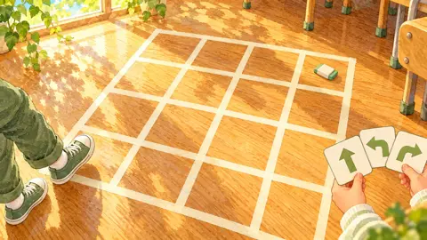
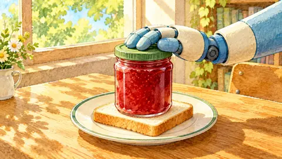
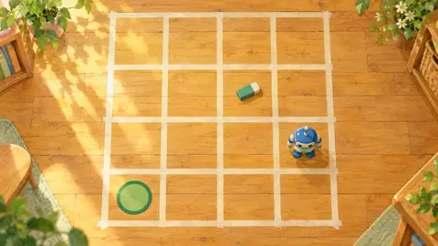
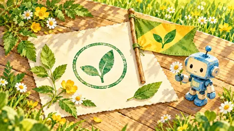

로봇 명령 되감아 버그 찾기
한 줄씩 따라가며 어디서 달라지는지 찾아요
칸을 눌러 설 곳을 예상하고, 한 줄 더로 따라가요.
미션 1 · 따라가 보기

줄 따라 움직이는 로봇줄 여섯 개를 읽고 로봇이 설 칸을 찍어요.
미션 2 · 버그 찾기

목표 길과 갈라지는 줄점선 길이 목표예요. 빈 동그라미와 로봇이 갈라지는 줄에서 여기를 눌러요.
미션 3 · 직접 만들기

분실물 가져다 놓기분실물을 집어 분실물함 칸에 두는 여섯 줄을 만들어요. 줄을 누르면 명령이 바뀌어요.
놀이판

세 미션을 모두 했어요. 로봇은 적힌 줄만 그대로 해요.
카드와 몸으로 하는 활동 전에 해 보는 연습이에요.
그림 일부는 생성형 AI로 만들었어요.